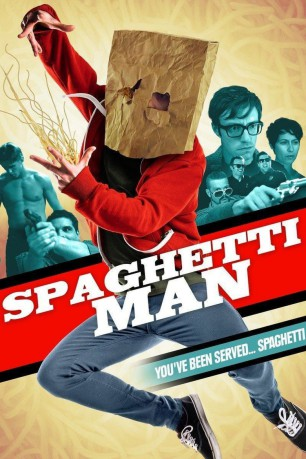

#11544 Spaghettiman
 
 IMDB-Wertung: 5.1 / 10
IMDB-Wertung: 5.1 / 10  Metascore: 0
Metascore: 0 
Clark doesn't care about you. He doesn't care about the world. He barely cares about himself. But after an incident with an old bowl of spaghetti and a malfunctioning microwave, he becomes a superhero that can fight crime with the power of spaghetti. However, you have to pay him.
Jahr: 2016
Dauer: 85 Minuten
FSK:
Land: USA Studio: Umbrella EntertainmentTonspuren: DTS - ,
Untertitel:
Auflösung: 1080p (1920x808) Größe: 3840 MB
Genre: Action, Komödie, Krimi
Regisseur: Mark Potts
Drehbuch: Winston Carter, Benjamin Crutcher, Mark Potts, Brand Rackley
Soundtrack: Vance Kotrla
Darsteller:
- Brand Rackley als Anthony Banner
- Joe LoCicero als Keto
- Leigh Wulff als Katie
- Kevin M. Brennan als Officer Garibaldi
- Doug Manley als Officer Betts
- Matt Hobby als Pot Doctor
- Mary Grill als Miss Hansen
- Ali Hoffmann als Dizzy Daisy
- Joe Fria als Gary
- Ross Buran als Mugged Man
- Jeremy Culhane als Homeless Kid
- Anthony Gioe als Wheelchair Man
- Janine Hogan als Car Thief
- Erin McGown als Pizza Customer
- Will Morgan als The Horizon
- Blake Rosier als Gabriel
- Evan Sloan als Dwayne
- John Wyatt als Pokey
- Benjamin Crutcher als Clark / Spaghetti Man
- Winston Carter als Dale / Shadow Man
- Nathan Caywood als Nasty Nate
- Janna Jude Brown als Stephanie
- David Reynolds als Bar Partier
- Joseph Aceves als Phone Thief
- Alex Castro als Henchninja Z
- Jacob Cormier als Larry
- Erika Curry als Newscaster
- Jenny Da als Henchninja X
- Chad Damiani als Mugger Calogero's Homie
- Samir Forghani als Zamir
- Alex Galbate als Bar Partier's Wingman
- Michael L. Garcia als Lennox
- Esau Hamadanyan als Car Owner
- Aryiel Harman als White Pussy
- Kris Huelgas als Bar Birthday Boy
- Ryan Johnson als Kidnapper
- Daryl Lee als Frail Man
- Lindsey Newell als Kidnapped Woman
- Jack Norman als Nightbandit
- Brandon Raman als Dean
- Espie Randolph als Viper Tortaga
- Brandon D. Scott als Cat Owner
- Juan Velasco als Purse Thief
- Jarrel Wade als Guy Who Waved
- Ben Wickman als Park Bully
- Juzo Yoshida als Mugger Calogero
- David Zwick als Derek
Datei: X:\2016(N-Z)\Spaghettiman (2016, FSK, 1920x808).mkv seit 23.07.2019
Festplatte: Gemischt-01+Anime
 Es gibt insgesamt 182 Filme in der Gruppe '2016(N-Z)'
Es gibt insgesamt 182 Filme in der Gruppe '2016(N-Z)'